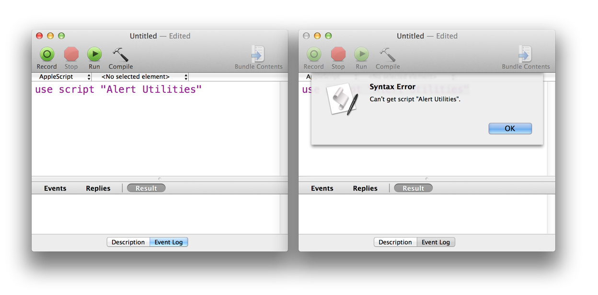
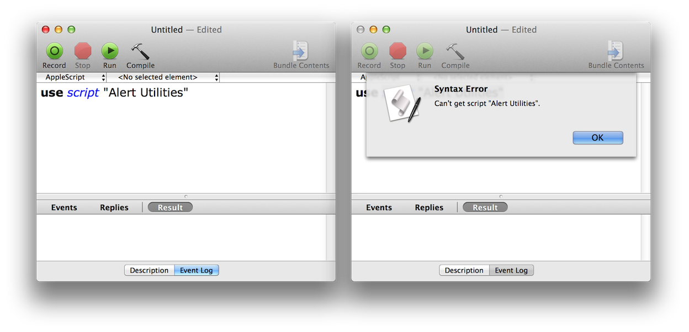

For its 20th anniversary debut in OS X Mavericks, AppleScript delivers a long-sought ability: an import command — dramatically extending the scope and power of this unique language.
A new AppleScript construct, called the “use statement”, imports the terminology and functionality of AppleScript Libraries and scriptable Applications through a simple single-line declaration placed at the top of a script, such as: use application "Finder", or: use script "My AppleScript Text Library".
The handlers, scriptable objects, properties, and terminology of AppleScript Libraries and scriptable applications imported via a “use statement,” are automatically available globally throughout the hosting script, no longer requiring numerous “tell statements” or “tell blocks” to be compiled and executed. Scripts taking advantage of the “use statement” are more streamlined and clearer than similar scripts not implementing this new construct.
In addition, AppleScript Libraries written in AppleScript/Objective-C, can incorporate “use” statements to import Cocoa frameworks, such as MapKit, EventKit, and WebKit.
A use statement declares a required resource for a script, such as an application, script library, framework, or version of AppleScript itself. If the required element cannot be located when the script is run, an error is returned.

(above) A use statement failing to compile due to a missing resource (in this case, a missing script library).

(above) A use statement failing when run, due to a missing resource (in this case, a missing script library).
Like tell or using terms from statements, a use statement specifies the terminology AppleScript should use in compiling the statements in a script, but unlike them, it does not contain statements and applies to the entire script object, instead of only applying to the statements within a block. The syntax and effects of use vary slightly depending on what the used resource is.
We will begin the examination of the use statement with the fundamental case of indicating the use of AppleScript:
use AppleScript
This also implicitly means that the script uses AppleScript version 2.3 or later, when use was first introduced, and that the script expects a newer behavior for how scripting additions are handled, described later.
A use command can also explicitly specify a minimum required version of AppleScript:
use AppleScript version "2.3.2"